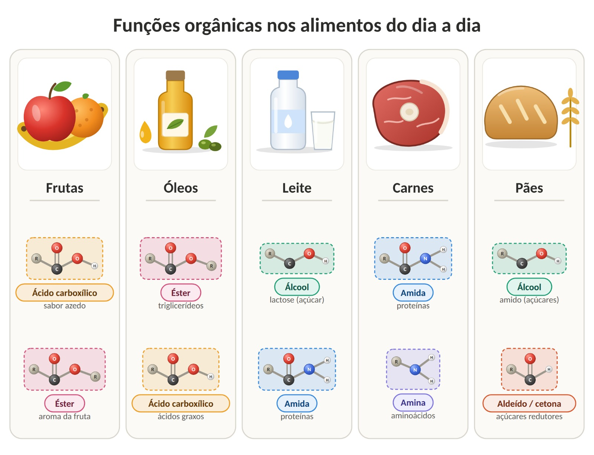

Têm açúcares (glicose e frutose: álcool com aldeído ou cetona), ácidos (como o cítrico, um ácido carboxílico) e ésteres, responsáveis pelo aroma. Por exemplo, o butanoato de etila lembra o aroma de morango e o etanoato de etila, o de maçã.
O que tem em cada alimento
Azeite, óleo de soja e manteiga são formados principalmente por triglicerídeos (ésteres). Quando o óleo é guardado de forma inadequada, parte dos ésteres pode reagir e liberar ácidos graxos livres (ácidos carboxílicos), o que altera cheiro e sabor.
Contém lactose (carboidrato), proteínas, como a caseína (com ligações amida), e gorduras (ésteres). Quando azeda, bactérias transformam a lactose em ácido lático, um ácido carboxílico.
São ricas em proteínas (aminas e amidas) e contêm gorduras (ésteres). Na decomposição, as proteínas liberam aminas, que têm cheiro forte e desagradável, como o do peixe estragado.
A farinha traz amido (carboidrato) e proteínas do glúten. O fermento transforma açúcares em etanol (um álcool) e gás carbônico: o gás faz a massa crescer e o álcool evapora no forno.
Resumo visual
